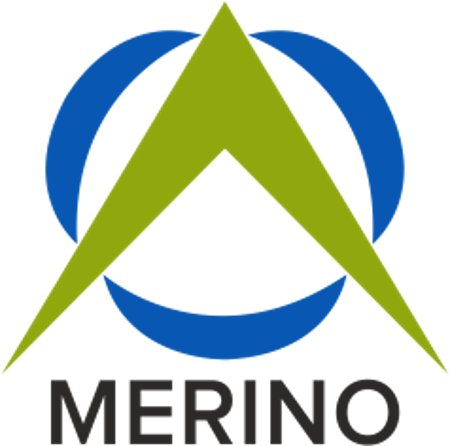

The approved torque specification is 42 Nm for the current revision.
Source
- Engineering SpecRev. 7 · p. 14
Enterprise AI Platform · by Merino Consulting Services
Enterprise AI Platform that connects your documents and business systems to deliver secure, role-aware, cited answers.
Role-aware. Cited. Never invented.
Plays this example in the stage below.Illustrative example · sample data
What is MERINO MERLIN
Organizations generate knowledge every day—from contracts, policies, SOPs, engineering specifications, reports, emails, and enterprise applications. Yet that knowledge remains fragmented across systems, making it difficult to find the right information when it matters most.
MERINO MERLIN (Merino Enterprise Retrieval & Language Intelligence) is an Enterprise AI Platform that brings your organization’s knowledge together in one intelligent conversation. It securely retrieves information from business documents and enterprise systems, delivering evidence-backed answers while respecting user permissions and organizational governance.
Every answer carries its source
Document title and page reference, or the system call and record count behind the figures.
See an answerYour permissions, on every request
Documents and ERP data are searched only within the asker’s access. Restricted information is invisible, not merely locked.
See it in SecurityNo evidence, no answer
When sufficient evidence is unavailable, MERINO MERLIN simply says “No Answer Found” rather than generating unsupported information.
See it in How it worksEnterprise knowledge shouldn’t be locked inside documents, disconnected systems, or individual expertise.
MERINO MERLIN enables employees to ask business questions in natural language and receive answers from approved organizational information—without switching between multiple applications or searching through countless files.
Illustrative example · sample data
Illustrative example: instead of searching a document library, Infor LN, email, a shared drive and messages, one question is asked: “What is the approved torque specification for Line 4?” The answer: “The approved torque specification is 42 Nm for the current revision.” Source: Engineering Spec, Rev. 7, page 14.
Unlike generic AI tools, MERINO MERLIN is built specifically for enterprise environments where security, governance, and accuracy matter.
| Generic AI | MERINO MERLIN |
|---|---|
| Generic AI: General internet knowledge | MERINO MERLIN: Organization-specific knowledge |
| Generic AI: Can hallucinate | MERINO MERLIN: Evidence-backed answers |
| Generic AI: Limited business context | MERINO MERLIN: Enterprise-aware intelligence |
| Generic AI: No document citations | MERINO MERLIN: Source and page citations |
| Generic AI: Generic security | MERINO MERLIN: Role-based enterprise security |
| Generic AI: External AI dependency | MERINO MERLIN: Private enterprise deployment |
| Generic AI: One-size-fits-all | MERINO MERLIN: Built for enterprise operations |
One platform
KB · Cited
Retrieve information from contracts, SOPs, manuals, policies, engineering documents, quality records, and knowledge repositories with document and page citations.
Illustrative example: passage 4.2 of an engineering specification, highlighted and cited as Engineering Spec, Rev. 7, page 14.
ERP · Infor LN
Access live information from ERP and enterprise applications using the user’s existing permissions—without bypassing security controls.
Illustrative example: an approved Infor LN read, list open invoices for supplier APX-0147, returns three rows; figures come from Infor LN under Management, Finance access. Writes go through preview, confirm, execute and log.
Approved template
Generate recurring business documents, summarize information, answer operational questions, and accelerate decision-making using your organization’s approved knowledge.
Illustrative example: the approved template Supplier payment reminder, filled with Apex Fasteners, Net 45 (MSA section 6.1), 3 open invoices (Infor LN) and 28 Sep 2026, marked DRAFT — REVIEW REQUIRED.
Illustrative example · sample data
What MERINO MERLIN delivers
Enterprise AI built for business
Documents + enterprise systems
Answers from documents with source citations
Engineering Spec · Rev. 7 · p. 14
Live enterprise system connectivity
Infor LN · approved read · 3 rows
Role-based access control
Scope · resolved server-side
Evidence-backed responses
2 of 6 passages above threshold
Refusal when evidence is unavailable
No answer found.
AI-generated business documents from approved templates
DRAFT — review required
Secure deployment within your environment
Deployment boundary · yours
External AI models never train on your enterprise documents
Retrieval only · not training data
Illustrative example · sample data
Path of a request
Illustrative example · sample data
Every request begins by validating the user’s identity, roles, and access permissions.
Illustrative example: a Process Engineer asks “What is the approved torque specification for Line 4?” Identity verified; role Member; department Manufacturing; folders Specs and Line SOPs. Roles resolved on every request.
MERINO MERLIN searches only the documents and systems the user is authorized to access.
Illustrative example: the scope resolves to Manufacturing, 8 of 30 documents. Outside your scope: not searched, not shown. Restricted information is invisible, not merely locked.
Relevant information is evaluated before being used to generate a response.
Illustrative example: six passages are scored against an evidence threshold of .64. Two qualify, at .91 and .78, both from Engineering Spec ES-1140, Rev. 7, page 14. Four weak passages, from .56 down to .14, do not proceed.
Answers are generated only from approved enterprise knowledge and include supporting citations where applicable.
Illustrative example: the answer “The approved torque specification is 42 Nm for the current revision.” is composed from the two qualifying passages and labeled KB · Cited. Source: Engineering Spec, Rev. 7, page 14.
When sufficient evidence is unavailable, MERINO MERLIN simply says “No Answer Found” rather than generating unsupported information.
Illustrative example: “What torque does the Line 9 retrofit require?” No passage reaches the evidence threshold, so the result is: No answer found. Searched 8 documents in Manufacturing. Nothing in this scope covers it.
Security & governance
MERINO MERLIN is designed for organizations that require AI without compromising security or compliance.
Scope is resolved server-side from the asker’s roles, departments and folder grants. Nothing about scope is ever supplied by the client.
Microsoft AD or hardened email-and-password sign-in; a mandatory second factor for administrators; three global roles.
Documents, embeddings and conversation history live in your environment. MERINO MERLIN is designed to run inside the boundary you control.
Approved documents are indexed for retrieval only. They are never used to train external AI models.
Sign-ins, answers, refusals, feedback and every ERP call are logged to an audit record that cannot be edited or deleted.
Each department’s knowledge is partitioned. Department is the wall; folder grants are the door — and both are enforced in the database.
Documents and ERP data are searched only within the asker’s access. Restricted information is invisible, not merely locked.
Same question
Illustrative example“What are our payment terms with Apex Fasteners?”
Signed in as (demo identity)
Signed in asProcurement · Member
What this identity can search
Asked as Procurement · Member
Net 45 from invoice date, with a 2% early-payment discount inside 10 days.
Source
6.1 Net 45 days from invoice date; 2% discount if paid within 10 days.
Restricted content is not shown as locked — it is not shown at all.
Scope is resolved on every request. The client never supplies it.
Designed around enterprise security expectations, including ISO 27001, SOC 2, ISO 42001, and regional privacy requirements such as India’s DPDP Act.
Certification status of any deployment depends on the operating organization and its environment. We share the control mapping with your security team during evaluation.
We would rather answer them before a pilot than after one.
by Merino Consulting Services
MERINO MERLIN was developed by Merino Consulting Services to solve real enterprise knowledge challenges and is used within Merino’s own operations.
Unlike standalone AI vendors, Merino combines deep expertise in:
ERP, MES, CRM, SCM, WMS, EAM, PLM, CPQ & more
Implemented and optimized for manufacturing and distribution businesses.
Digital Transformation
Process redesign and technology roadmaps that hold up in daily operations.
Application Managed Services
Ongoing support, enhancement and modernization of the applications your business runs on.
Technology Solutions & Integrations
Connecting ERP, business applications and data so one answer can span them.
Data & Analytics
Reporting and analytics built on governed, trustworthy data.
AI-led Business Transformation
Use-case discovery, governance and adoption for AI that has to work inside an enterprise.
The same experts who built MERINO MERLIN work alongside customers to evaluate, implement, and scale enterprise AI solutions.

by Merino Consulting Services
We were our own first client
Legal, finance and tools documentation, plus live Infor LN data — each department gated on its own set of golden questions with known-correct answers, including the ones MERINO MERLIN must refuse. That evaluation harness is part of the product, not a slide.
Business use cases
Organized by business function. Each one starts with a real question and ends with an answer you can check.
Business question
“What is the approved torque specification for this assembly, and which production orders are using the previous revision?”
ES-1140 · Line 4 fastening
What is the approved torque specification for this assembly?
The approved torque specification is 42 Nm (ES-1140, Rev. 7).
Production orders
production_orders · spec_rev = 6 · status = open
3 rows · your permissions apply
Which production orders are still using the previous revision?
Three open production orders still reference Rev. 6: PO-24117, PO-24121 and PO-24130.
Figures from Infor LN, never the model.
Business question
“What are our payment terms with this supplier, and what invoices remain outstanding?”
Master Supply Agreement — Apex Fasteners
What are our payment terms with Apex Fasteners?
Net 45 from invoice date, with a 2% early-payment discount inside 10 days (§6.1).
Open invoices
list_open_invoices · supplier = APX-0147
3 rows · your permissions apply
Which of their invoices remain outstanding?
Three invoices from Apex Fasteners are open.
Figures from Infor LN, never the model.
Business question
“Which invoices are currently blocked because of disputed delivery notes?”
Accounts Payable Policy FIN-07
What does our policy say about invoices with disputed delivery notes?
A disputed delivery note blocks payment until it is resolved (FIN-07 §4.2).
Blocked invoices
blocked_invoices · reason = delivery_dispute
3 of 7 shown
Which invoices are blocked for that reason right now?
Seven invoices are currently blocked with reason delivery_dispute.
Figures from Infor LN, never the model.
Business question
“Which SOP governs this deviation, and what did the last audit report identify?”
SOP-014 Deviation Handling
Internal Audit Report Q2
Which SOP governs this deviation, and what did the last audit report identify?
SOP-014 Rev. 2 governs deviation handling. The Q2 internal audit raised one observation on deviation record retention.
Business question
“What is the notice period defined in our warehouse lease?”
Warehouse Lease Agreement
Lease Amendment No. 2
What is the notice period defined in our warehouse lease?
Either party may terminate with six months’ written notice, served before the end of the current term (Clause 14.2).
The best demonstration uses the questions your teams already ask each other.
What the POC is
See MERINO MERLIN working with your organization’s own data.
Our structured Proof of Concept uses:
This allows organizations to evaluate AI accuracy, security, governance, and business value before wider deployment.
Tell us the department and a few real questions. We’ll come back with a proposed golden set and timeline.Tell us about your team and the questions you want to see answered.
Thanks, . The MERINO MERLIN team will reply to within two working days to agree the department, the golden set and the success criteria.to arrange a demo.
Scope
Select one department and its real questions.
Baseline
Write a golden set of questions with known-correct answers before the pilot begins.
Test
Check that MERINO MERLIN cites the correct source, answers accurately when evidence exists, and refuses when it is absent.
Evaluate
Measure the results against the success criteria agreed up front.
Exit
Produce a documented result for security, governance and business review.
Golden set
Illustrative formatA written golden set of known-correct answers is agreed before anything runs — so the result is a measurement, not an impression.
Business value
Unlock enterprise knowledge across documents and systems
See it in One PlatformImprove productivity with trusted AI
See it in Why MERINO MERLIN?Reduce time spent searching for information
See it in Business Use CasesProtect enterprise data with role-aware security
See it in SecurityDeliver answers backed by organizational knowledge
See it in How it worksAccelerate AI-led business transformation
See it in Built by MerinoUnlock the knowledge already within your enterprise.
Discover how MERINO MERLIN helps organizations transform fragmented information into trusted business intelligence.
Illustrative example · sample data
The example shows the answer “The approved torque specification is 42 Nm for the current revision.” with its source, Engineering Spec, Rev. 7, page 14.
Frequently asked questions
Anything missing? Put it in the request form and we’ll answer it in writing.
No. MERINO MERLIN uses your approved documents as retrieval material. They are not used to train external models.
MERINO MERLIN works with documents as they exist within the approved knowledge scope. Its citations and refusals also show which questions the current corpus cannot reliably answer — useful input for cleaning it up.
No. MERINO MERLIN operates under the access context of the person asking the question.
Supported answers include their source. When sufficient evidence is unavailable, MERINO MERLIN refuses rather than inventing an answer.
Yes — within the asker’s authorized access, and with each answer labeled with where it came from.
Within your deployment boundary, supporting an enterprise-controlled approach to business information.
With a focused POC: one department and its real business questions, scored against a golden set agreed in advance.
No. Every response follows the user’s existing enterprise permissions. Restricted content is not shown as locked — it is not shown at all.
Yes. MERINO MERLIN works with enterprise systems while respecting existing authentication and authorization. Infor LN is supported today; other systems connect through the same registry-governed approach.
Every answer includes supporting evidence and document citations, and the POC measures citation accuracy against questions you already know the answers to.
It says so, plainly — “No answer found.” — and tells you what it searched.